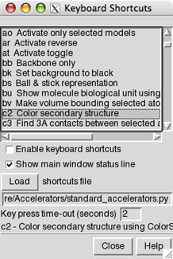

The Keyboard Shortcuts extension allows simple keyboard shortcuts (accelerators) to be used for many operations in Chimera. See also: general keyboard shortcuts
Use of these shortcuts is disabled by default, but can be turned on:
Many accelerators are included with Chimera, and more can be added. They usually consist of two characters, but any number of characters is possible. Uppercase letters are sometimes used and are distinct from lowercase. Several provide capabilities not accessible through the graphical interface. Keyboard shortcuts are not entered in the Command Line except via the command ac.
|  |
There are several ways to start Keyboard Shortcuts, a tool in the General Controls category. The resulting dialog lists the known accelerators along with brief descriptions. Clicking on an entry in the list shows a more detailed description (if available) at the bottom of the dialog.
Keystrokes may be interpreted as accelerators, as commands, or as information intended for other dialogs. Sometimes it is necessary to click in the graphics window to take back focus from some other dialog so that accelerator or command keystrokes will register.
An accelerator takes effect as soon as it is typed; there is no need to press return (Enter). A command takes effect after return is pressed. How these forms of input are distinguished:
Keystrokes being interpreted as accelerators are shown in the status line; the time-out setting controls how long a partial accelerator entry is retained. If the wrong key has been pressed, simply waiting for the time-out period to elapse allows a fresh start. Alternatively, pressing the escape key clears the partial accelerator from memory. Finally, if no accelerator starts with the key that has been pressed, an "unknown accelerator" status message results and the keystroke is not retained. Completed accelerator operations are reported in the status line and Reply Log.
The standard Chimera keyboard shortcuts are defined in
share/Accelerators/standard_accelerators.pywithin the Chimera installation directory. New accelerators can be added by writing their definitions in a Python file and reading the file with Load on the Keyboard Shortcuts dialog.
Example file:
def register_accelerators():
from Accelerators import standard_accelerators
standard_accelerators.register_accelerators()
from Accelerators import add_accelerator
add_accelerator('ry', 'Rotate models about y axis', rotate_y)
add_accelerator('rs', 'Stop model rotation', stop_rotation)
def rotate_y():
'Spins models about the y axis'
import Midas
Midas.roll(axis = 'y')
def stop_rotation():
'Stops spinning models'
import Midas
Midas.freeze()
The register_accelerators() function is called by the Accelerators extension. The first two lines load the standard accelerators. The next three lines define accelerators ry and rs to spin the models about the Y axis and to stop the spinning. The routines that spin and stop the spinning use the Chimera Midas module. The comment strings in the add_accelerator lines are the short descriptions that appear in the top part of the Keyboard Shortcuts dialog and, when the accelerator operation is performed, in the status line; the comment string within each function is the explanation shown at the bottom of the Keyboard Shortcuts dialog when the accelerator list entry is clicked.
Since accelerators take effect immediately (without return), a new accelerator cannot start with an existing accelerator. For example, if ab is a known accelerator, accelerators of the form abx, where x is any character, cannot be used.
A click in the graphics window may be required.
Sometimes it is necessary to click in the graphics window
to take back focus from some other dialog so that
accelerator or command keystrokes will register.
"Off by one" situations can occur.
Suppose sv (open the
Side View) is intended, but "xv" is typed accidentally.
If there is no accelerator starting with "x," an "unknown accelerator"
status message results and only the "v" is retained in memory.
If sv is then typed before the time-out period
has elapsed, the keystrokes will be interpreted as the accelerator
vs (show volume) and another "v" is retained in memory until
the time-out period has again elapsed
(or the escape key is pressed).
Accelerators could be shown on menu entries.
The keyboard shortcuts could be shown on the corresponding menu entries
to make them easier to learn. More accelerators could be defined
so that they are available for all suitable menu entries.